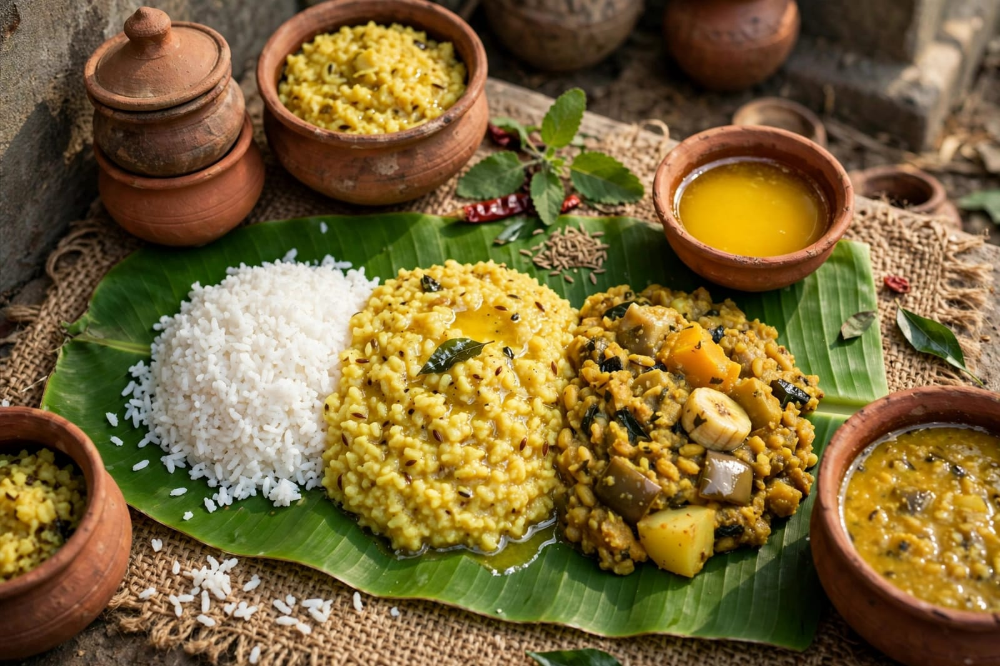

About Ratha Yatra
Ratha Yatra is one of the most important and famous festivals of Odisha. It is especially celebrated in Puri and is dedicated to Lord Jagannath, Lord Balabhadra and Goddess Subhadra. The festival is also known as the Chariot Festival. During Ratha Yatra, the three deities are taken out from the Jagannath Temple in grand decorated chariots. Thousands of devotees gather in Puri to participate in the celebration and seek the blessings of the deities.
The main attraction of Ratha Yatra is the pulling of the huge wooden chariots through the streets of Puri. Lord Jagannath travels in Nandighosa, Lord Balabhadra travels in Taladhwaja and Goddess Subhadra travels in Darpadalana. Devotees pull the chariots with great devotion. The atmosphere is filled with religious songs, traditional music and the joyful participation of people. The festival represents the idea that the deities come out of the temple to meet and bless all devotees.
Ratha Yatra is celebrated with great devotion and cultural enthusiasm. The festival continues for several days and includes different traditional rituals. One important ceremony is the return journey of the deities to the Jagannath Temple, which is known as Bahuda Yatra. People from different parts of India and other countries visit Puri during this festival. Ratha Yatra is an important part of Odisha's religious tradition, art, culture and heritage.
Special Foods

Khichdi
Khichdi is a simple traditional food prepared during religious occasions.

Mahaprasad
Mahaprasad is the sacred food associated with Lord Jagannath.

Malpua
Malpua is a popular sweet dish prepared for festive occasions.